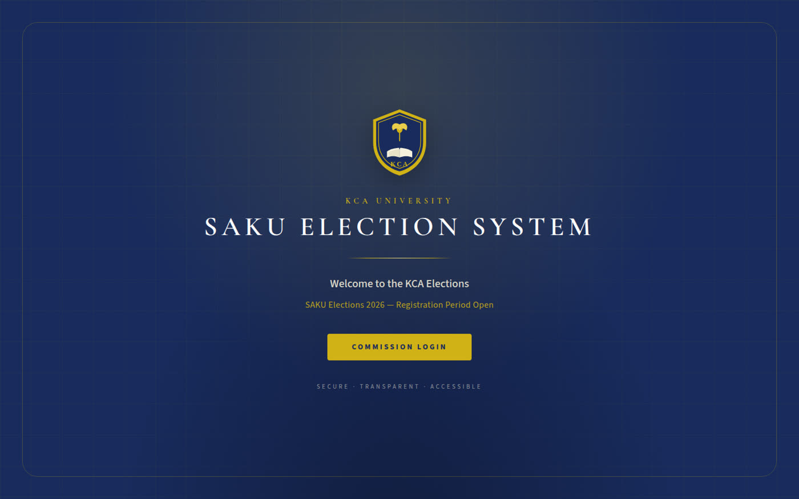
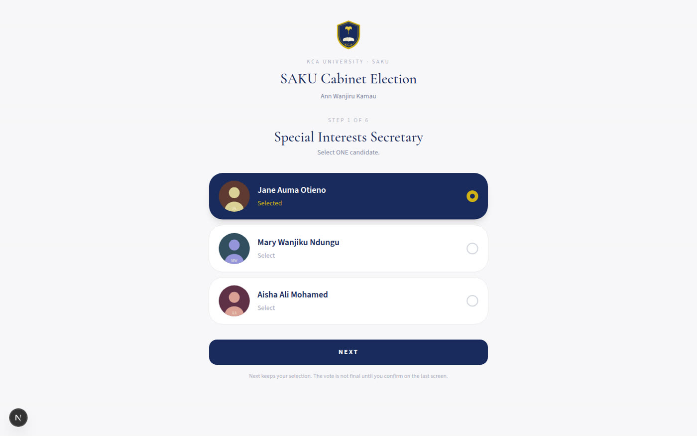
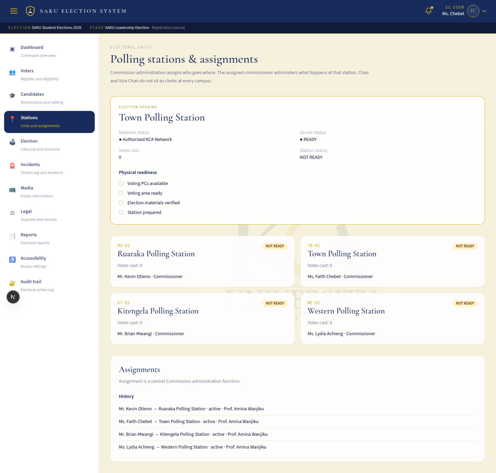

KCA University · Phase 2 Project
Secure electronic election management for the Students Association of KCA University
Not an online form for collecting votes. A command interface for administering a two-stage student election — with authority, audit, and a controlled ballot.
Prototype · Validation build · 2026
The problem
What breaks with ordinary online forms
What SAKU actually requires
The solution
Commission
Administrative command interface for seven members. Desktop-first. Authentication is not authorization.
Election 1
Eligible students elect delegates from their own electoral unit. School and department are derived, never chosen.
Cabinet
Delegates vote a sequential ballot. President + Vice President run as one ticket. One elector, one completed vote.
ICT still exists — for servers, databases, backups, and monitoring — but it is not an election account and cannot enter this portal.
Authority model
| Role | Primary responsibility | Restricted powers |
|---|---|---|
| Chair | Overall Commission authority | Results authorization · emergency initiation |
| Vice Chair | Senior co-authorization | Emergency second signature · cannot certify results |
| Secretary General | Records, coordination, registers | No final opening / closing / results |
| Commissioner · Ruaraka | Station election officer | Town / Kitengela / Western functions stay out of reach |
| Commissioner · Town | Station election officer | Assignment, not a second account type |
| Commissioner · Kitengela | Station election officer | Incident log rolls up to the centre |
| Commissioner · Western | Station election officer | Phone access is evidence upload only |
Electoral design
Election 1 · Electoral College
Electorate: eligible KCA students (mock first-year register in this prototype).
They vote only for approved delegate candidates in their own campus / school / department unit.
Delegate seats stay unconfigured until the Commission enters an authoritative number. Nothing is defaulted to 3.
Election 2 · SAKU Cabinet
Electorate: the Electoral College Register, generated automatically from confirmed Election 1 winners.
No manual “add elector” workflow. Registration number + OTP. Sequential contests. Joint presidential ticket. Vote locks on final submit.
Landing
The public page stays deliberately small. Status is dynamic — registration, voting, or results pending — without becoming a public results dashboard.
Brand colours are KCA deep blue #182B5C and gold #D0B216.

Commission portal
Persistent sidebar. Election and stage in the top bar. Emergency stays a restricted control for Chair and Vice Chair. Results are reached through the election workflow, not as another hamburger item.
Cabinet ballot
Large selectable cards. Navy selected state. One contest at a time. NEXT keeps a choice; it does not submit. The success screen never shows who was selected.

Stations
Assignment activates election-officer functions for Ruaraka, Town, Kitengela, and Western. Physical readiness, then open, monitor, record incidents, close. The system already knows which station the commissioner is reporting from.

Trust
Institutional credentials, not a hard-coded National ID scheme.
Identity → role → election assignment → stage → access.
Opening, closing, results, and emergency require a fresh password.
Chair initiates, Vice Chair authorizes. The initiator cannot sign their own pause.
Technical staff may authenticate and still be refused this portal.
Electoral actions, structural changes, and evidence references — not raw server logs.
Demonstration access
Password for every seeded directory account: KCAU@2026
| Work ID | Name | What you will see |
|---|---|---|
KCAU-EC-001 | Prof. Amina Wanjiku | Chair · full electoral authority |
KCAU-EC-005 | Ms. Faith Chebet | Town station officer · no Emergency item |
KCAU-ICT-001 | Eng. Peter Kamau | Credentials verify · Commission access denied |
Election 1 desk uses Student ID + PIN SAKU2026. Cabinet desk unlocks after the Electoral College Register is generated from Election 1 results.
SAKU Election System · KCA University
The system preserves the operational record. It does not adjudicate disputes. It does not invent delegate seats. It does not treat a successful login as permission to run the election.
Thank you